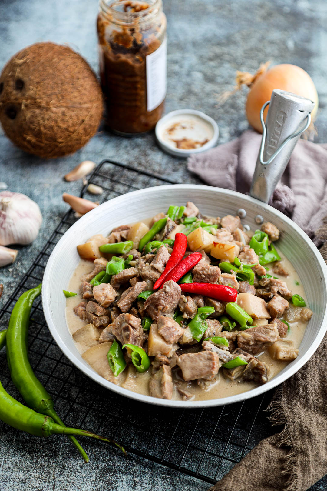

Bicol Express

Description
Bicol Express is a dish originating from the Bicol Region in the Philippines. Cooked with the sweetness of coconut milk contrasted with the flavors of chilis and bagoong.
Ingredients
- 2 lbs pork belly
- 2 cups coconut milk
- 2 cups coconut cream
- 1/2 cup shrimp paste
- 4 cloves garlic
- 6 pcs Thai chili pepper
- 1 thumb ginger
- 1 pc onion
- 1 pc Serrano pepper
Steps
- Combine ginger, garlic, onion, Thai chili pepper, pork, and coconut milk in a pan. Mix well. Cover the pan and turn the heat to on. Let the mixture boil.
- Remove the cover. Stir. Add half of the bagoong and pour around 1 cup of coconut cream and a cup of water. Stir and adjust the heat to low. Cook until the sauce reduces to a quarter (around 50 minutes).
- Add the remaining coconut cream and bagoong alamang (as needed). Also add the Serrano peppers. Continue cooking in low heat until the sauce thickens
- Transfer to a serving plate and serve with warm rice.
Return Home